༻༺━━━━⁎∗..∗⁎━━━━༻༺
Natalya Andreyevna Rostova
༻༺━━━━⁎∗..∗⁎━━━━༻༺
❝Pseudonim❞
Rosa/Nat
❝Wiek i data urodzenia❞
18 / 30.07
❝Orientacja seksualna❞
Bi
❝Płeć❞
Dziewczyna
༻༺━━━━⁎∗..∗⁎━━━━༻༺
Aby poruszać się po stronie klikaj w krawędzi strony
༻༺━━━━⁎∗..∗⁎━━━━༻༺
❝Charakter❞
༻༺━━━━⁎∗..∗⁎━━━━༻༺
Rosa jest bardzo spokojną osobą. Wszyscy którzy ją znają doskonale wiedzą że jeżeli ktoś wprawił Natalye w złość to musiał bardzo ostro przeskrobać i zaleźć jej za skórę. Dziewczyna jest zamknięta w sobie i “Nie zna siebie” więc kiedy musi mówić o sobie bazuje w 100% na opiniach innych gdzie “inni” to max 1 osoba. Czasami może mieć duże wahania nastroju. od uosobienia ADHD po chodzącą depresję, lecz w zależności od okoliczności będzie lub nie starałą się tu ukryć. W walce ogranicza się do “pacyfikacji” nie potrzebuje zabijać.
༻༺━━━━⁎∗..∗⁎━━━━༻༺
-Łatwo ją rozproszyć
-Zapominalska
-Czasami najpierw robi potem myśli
-Problemy które to prawo a które lewo
-"1 przyjaciel to wystarczająco"
-zbyt mocno bierze do siebie niemiłe przezwiska
-zmienny humor
+"Najpierw zrób potem odpoczynek"
+Stara się być Miła
+Pomocna
+Wywiązuje się z obowiązków/obietnic
+Przyjaciele nade wszystko
༻༺━━━━⁎∗..∗⁎━━━━༻༺
❝Wady❞
-dobry słuch-
* często z tego powodu bolą ją uszy bo dźwięki mogą być dla niej za głośne*
-wada postawy/chodu-
*może być wyśmiewana ponieważ chodzi “od kreski”. Stawia nogę za nogą.
-częste bóle głowy-
༻༺━━━━⁎∗..∗⁎━━━━༻༺
❝Zalety❞
-Dobry słuch-
ze względu na zwierzęce uszy słyszy lepiej niż przeciętny człowiek
-lepszy reflex-
-kreatywna-
Do głowy przychodzą jej szybko rozwiązania problemów lub pomysły na zbudowanie czegoś
-ponadprzeciętna siła-
poprzez niedźwiedzią część jej genów jest silniejsza od większości ludzi
༻༺━━━━⁎∗..∗⁎━━━━༻༺
❝Lęki, fobie❞
PTSD
Lęk wysokości
Czasami dostaje lekkich ataków paniki w ciemności.
༻༺━━━━⁎∗..∗⁎━━━━༻༺
༻༺━━━━⁎∗..∗⁎━━━━༻༺
❝Historia❞
༻༺━━━━⁎∗..∗⁎━━━━༻༺
Dziewczynka miała normalne życie… no dobra. nie miała. od początku była zamknięta w sobie i nie chciała kontaktu z innymi dziećmi. Była po prostu.. Inna. Bawiła się tylko z 1 osobą a reszta ją nie interesowała. była dla nich miłą to prawda ale.. to tyle. nie wchodziła z nimi w interakcje. Natomiast za “wybrankiem” chodziła cały czas. wybrana osoba nawet nie musiała poświęcać jej wiele uwagi ale ta po prostu chciała być blisko. Rosa nic się nie uczyła. Nie chciała robić zadań domowych itp a mimo to dostawałą dobre stopnie. Rodzice byli z niej dumni ale z dzieckiem jak ona nigdy nie zaznali prawdziwego rodzicielstwa. Takie dziecko jest zbyt grzeczne. Kiedy urodziła się siostra Rodzice skupili się na niej. Przez to Natalye się zamknęła w sobie jeszcze bardziej i w życiu tylko płynęła z prądem. Na domiar złego w jej 15 urodziny rozpoczęła się plaga tego… czegoś. Rosa nawet nie miała jak wrócić do domu bo nie było do kogo… jej rodzina była jednymi z pierwszych ofiar trupów. Dziewczyna już przyzwyczajona do tego że radzi sobie z sobą sama też wszystko zamiotła pod dywan. Dziewczyna została sama i musiała uciekać przez umarlakami. Nat nie miałaby nic przeciwko śmierci ale życie miało inny plan. Dziewczyna znalazła broń i była w stanie sama przeżyć. Pewnie zastanawiacie się co stało się z “wybrankiem”?. bardzo proste. zginęła. Oczywiście Rosa to długo trawiła ale miała w sobie blokadę przy wszelkich próbach wtargnięcia się na swoje życie. Po Prostu nie potrafiła. Wtedy trafiła na obóz. ci przyjeli ją a ta próbuje się jakkolwiek zasymilować.
༻༺━━━━⁎∗..∗⁎━━━━༻༺
༻༺━━━━⁎∗..∗⁎━━━━༻༺
❝Info dodatkowe❞
༻༺━━━━⁎∗..∗⁎━━━━༻༺
❝waga❞
60
❝wzrost❞
170
❝Wygląd❞
Poca z Arknights
༻༺━━━━⁎∗..∗⁎━━━━༻༺
❝Broń❞
Rosa posiada dość nietypową broń w swoim arsenale. Jest to mniejsza wersja kiedyś maszyny oblężniczej pozwalającej na łatwe poruszanie się w wysokiej zabudowie. Dziewczyna znalazła ją i odpowiednio przerobiła aby pocisk pod ciśnieniem bez problemu mógł przebić się przez pancerz.
-zasięg-
Zależnie od długości liny ale do 10 metrów
-nieporęczny-
-jednostrzałowiec-
Ma tylko 1 nabój w magazynku
-ciężki do zadbania-
Sam nabój często się tępi
-cichy-
Nie wydaje prawie żadnych odgłosów
-długie przeładowanie-
zebranie odpowiedniego ładunku długo zajmuje a sam napęd sprężynowy często może być niewystarczający.
༻༺━━━━⁎∗..∗⁎━━━━༻༺
༻༺━━━━⁎∗..∗⁎━━━━༻༺
❝Galeria❞
༻༺━━━━⁎∗..∗⁎━━━━༻༺
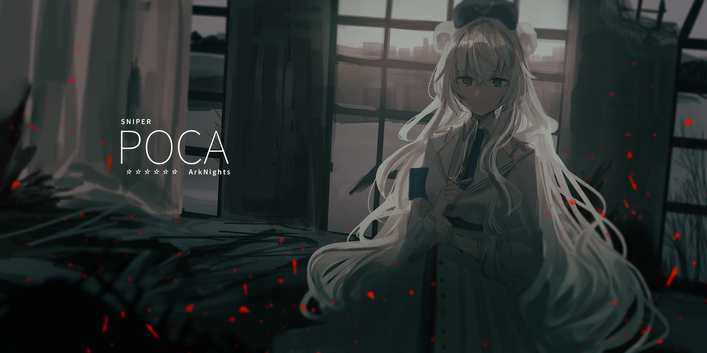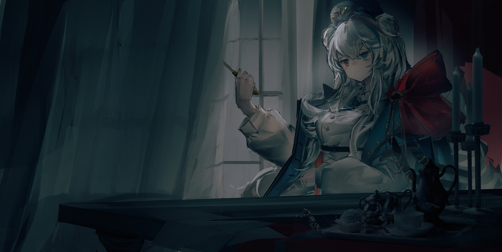
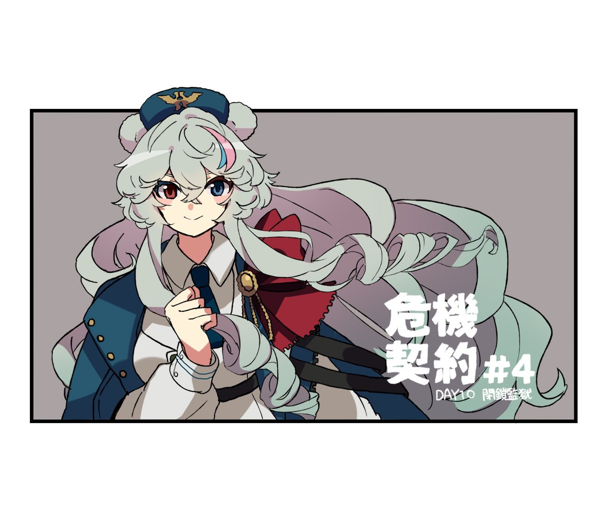
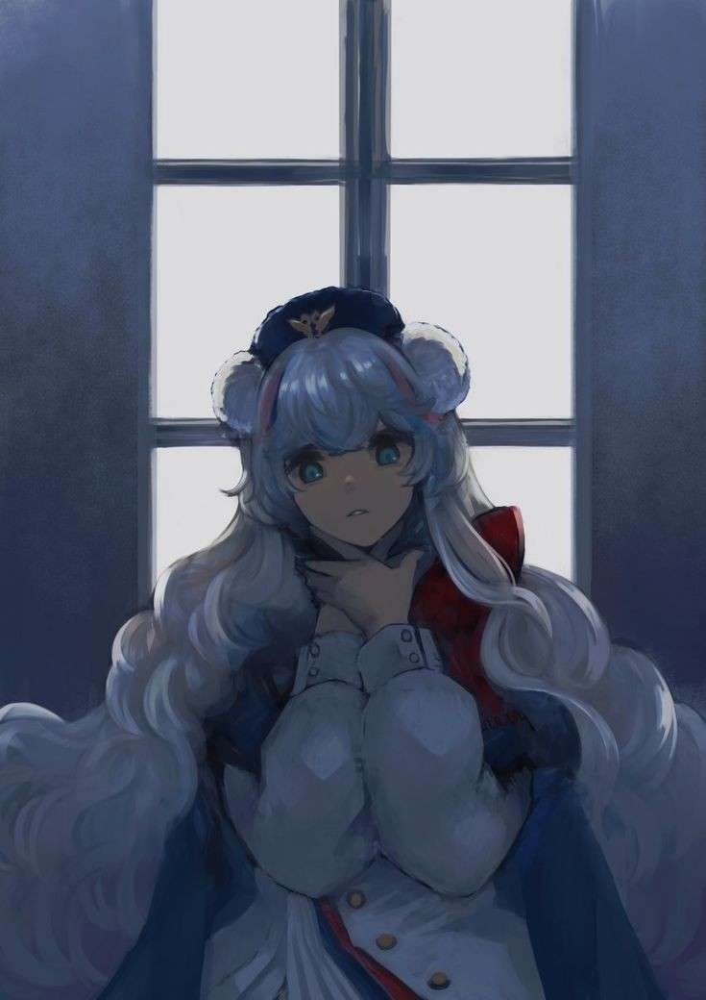

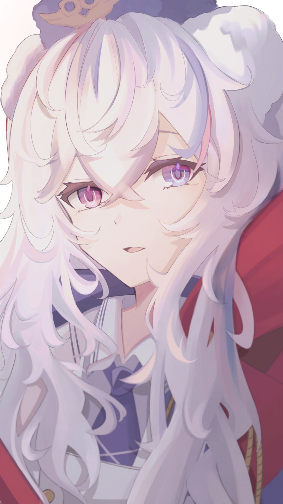
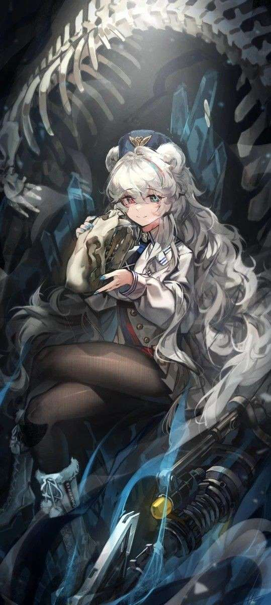
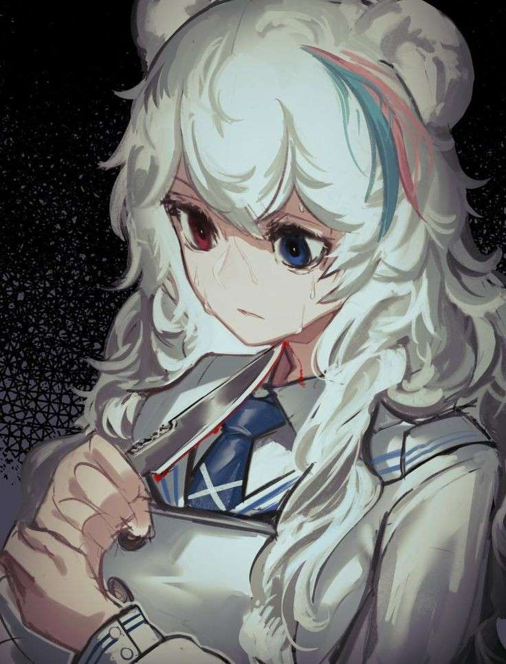
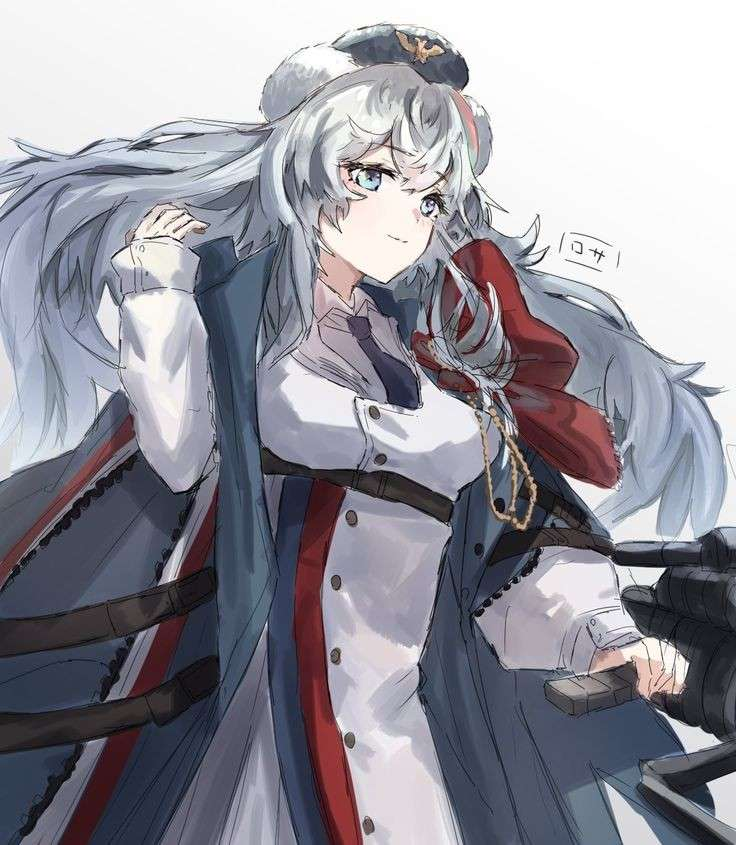
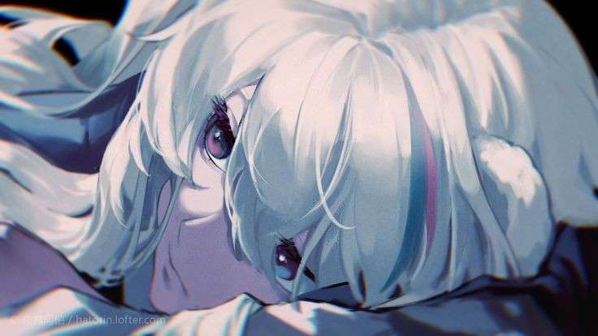
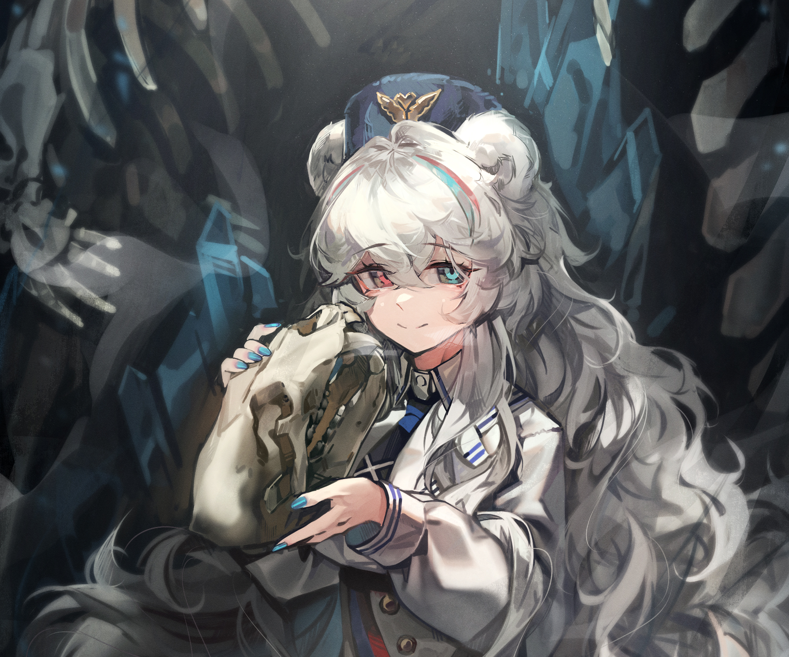
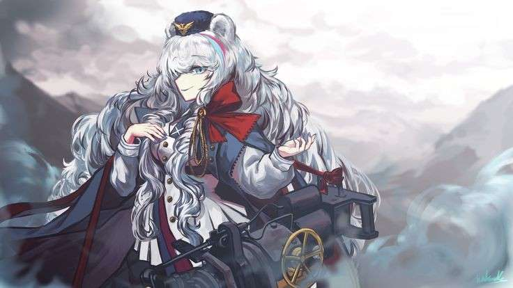
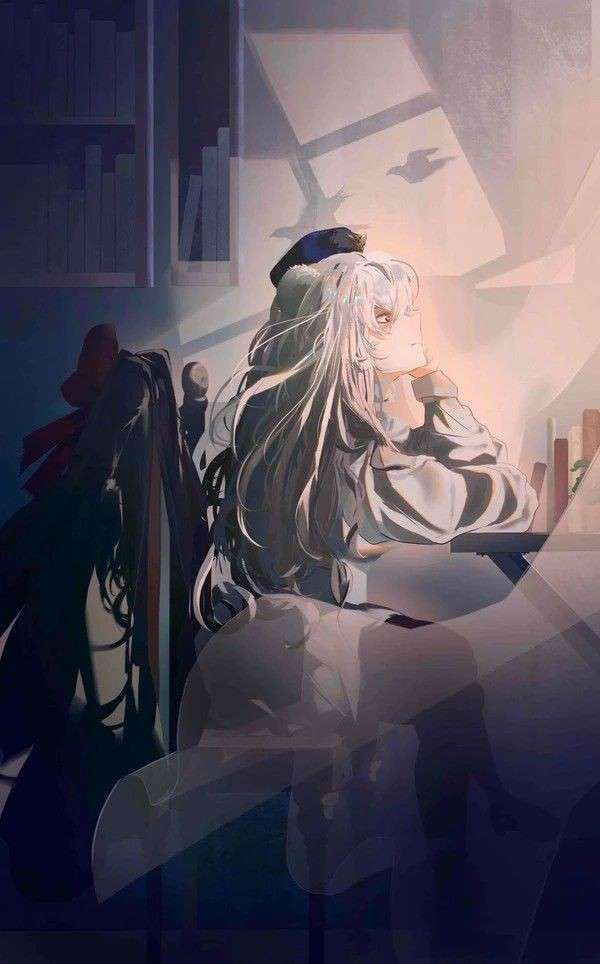
-suyama+kara-single-long+hair-looking+at+viewer.png)
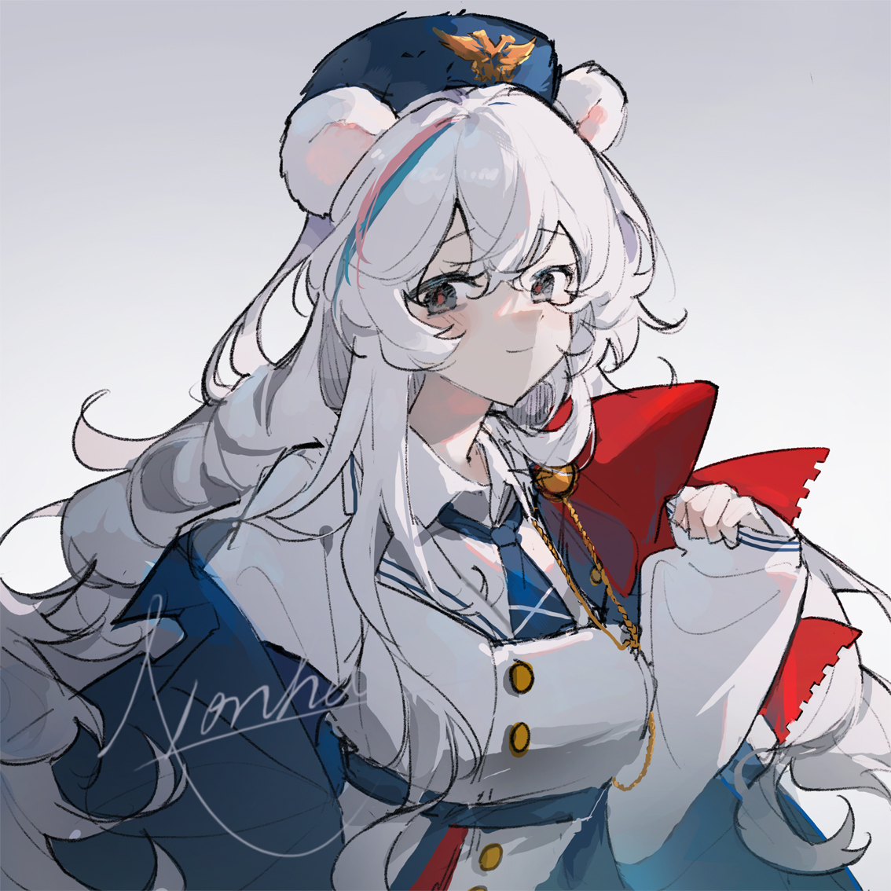
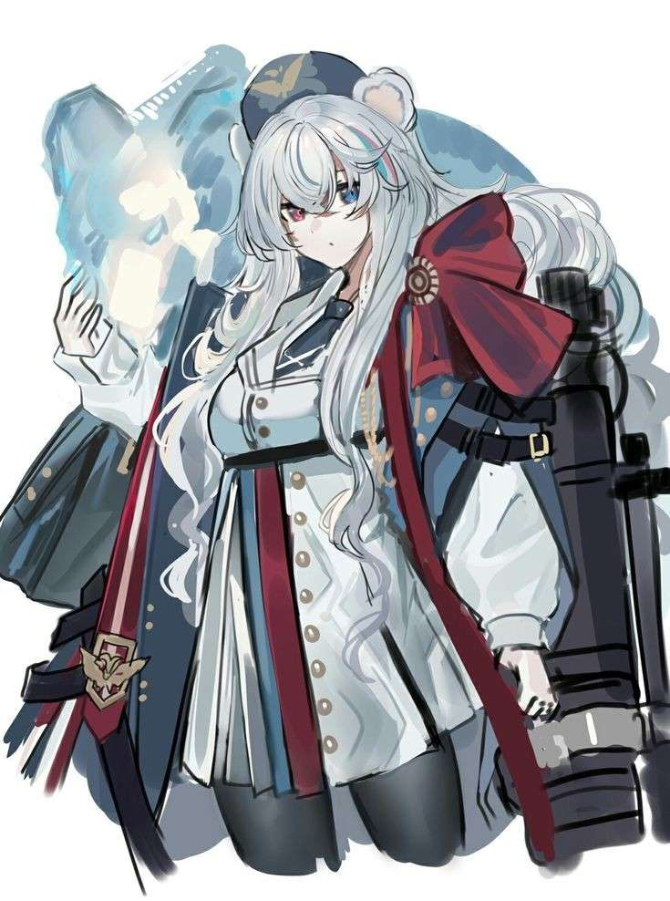
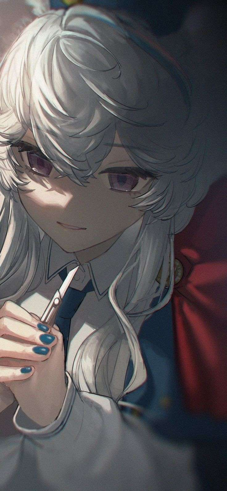
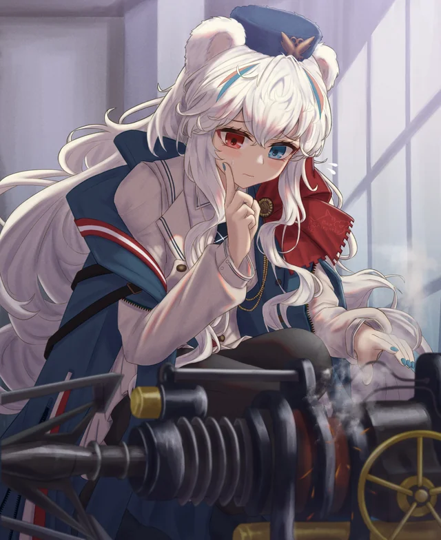